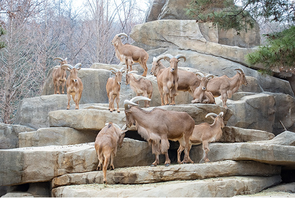

home > 에버랜드 > 에버랜드소개
에버랜드 소개
행복을 만드는 사람들 Design Happiness
영원과 활력을 의미하는 ‘EVER’와 자연과 포근함을 상징하는 ‘LAND’를 결합한 이름의 에버랜드 리조트는 1976년 ‘자연농원’으로 시작해 현재까지 한국의 여가 문화를 선도하고 있습니다.
에버랜드 리조트의 드라이 파크인 에버랜드는 다채로운 축제와 어트랙션, 동물원과 식물원으로 구성된 글로벌 테마파크입니다. 5개의 테마존과 계절마다 모습을 달리하는 다양한 축제, 최신 어트랙션 등 다채로운 시설과 서비스로 고객들에게 최고의 즐거움을 선사합니다.
-
- 축제
- 1년 365일 활짝 열려있는 에버랜드에서는 사계절의 특색을 살린 색다른 테마로 각기 다른 매력의 축제 펼쳐지고 있습니다. 축제에 따른 화려한 엔터테인먼트와 이벤트, 특별 콘텐츠를 통해 날마다 새로운 모습으로 고객들에게 기쁨을 선사하고 있습니다
-
- 어트랙션
- 에버랜드에는 40여종의 최신 어트랙션이 짜릿한 스릴을 선사하며 즐거움을 더하고 있습니다. 특히 우든코스터 T Express는 국내 최초, 세계 최고 등 각종 기록들을 갱신하며 전 세계 롤러코스터 마니아들에게 최고의 어트랙션으로 평가 받고 있습니다.
-
- 엔터테인먼트
- 축제 별 특색 있는 퍼레이드, 파크 곳곳에서 펼쳐지는 크고 작은 다양한 무대공연, 멀티미디어 불꽃 쇼 등 에버랜드에서는 국내 최고 수준을 자랑하는 초대형 엔터테인먼트가 날마다 새로운 즐거움을 제공하고 있습니다.
-

- 동물원
- 에버랜드 동물원 '주토피아'에는 200여 종 2,000여 마리의 동물들이 전시되어 있습니다. '사파리 월드'와 유인원 전용 테마공간 '프렌들리 몽키 밸리', 국내 최초 수륙양용 생태형 사파리 '로스트 밸리' 등 수준 높은 동물 체험학습을 할 수 있습니다.
-
- 식물원
- 에버랜드의 꽃과 나무, 정원과 숲으로 구성된 식물원 ‘플랜토피아’는 40년 동안 한국의 꽃 축제와 정원 문화를 선도해온 에버랜드의 최고의 조경과 원예 노하우가 결집되어 있습니다. 식물들의 아름다움을 보여주는 테마정원과 신개념 꽃 축제, 다양한 체험교육 프로그램을 통해 오감만족을 실현하고 있습니다.